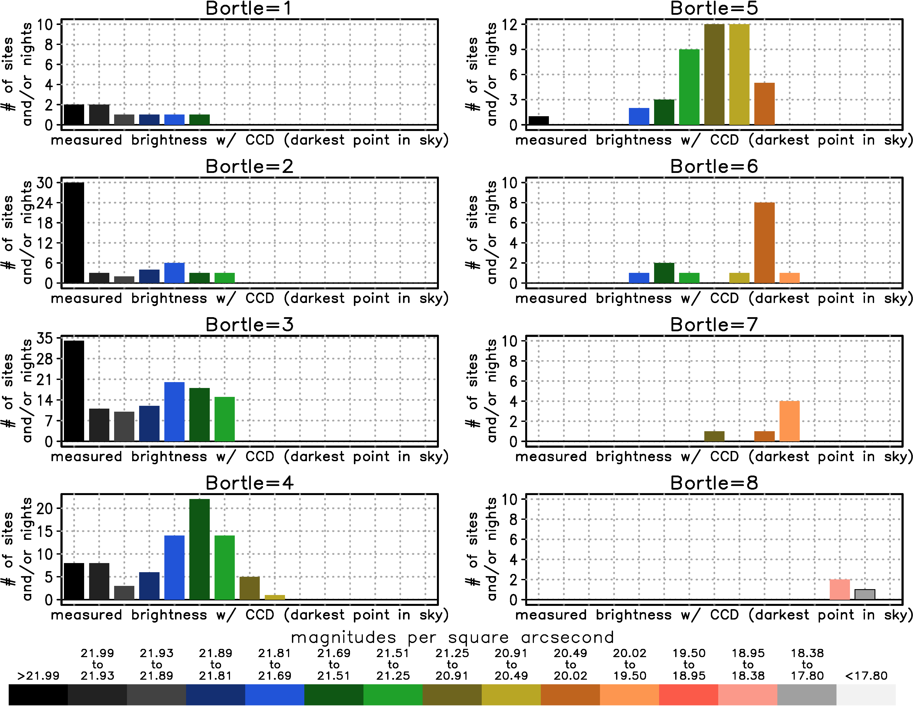

Zenith Brightness (aka Light Pollution Maps) vs Bortle Scale
The Bortle Scale and the first light pollution atlas were published around the same time, and ever since then these two distinct metrics have been conflated. The Bortle Scale is subjective and about the entire sky. Zenith Brightness is objective and just about zenith (straight up). The problem is exacerbated by the fact that the Bortle/map comparisons using the original 2001 atlas were applied to a newer 2015 atlas that is severely biased in rural areas. The 2015 atlas was too optimistic so people reporting Bortle 4 from a map were most likely Bortle 5 instead. The bigger problem is that zenith brightness and Bortle scale are too different to equate. The light pollution maps estimate artificial zenith brightness, so any map data should be reported as zenith brightness not the Bortle Scale.
To show the differences between zenith brightness and the Bortle scale, I use data from the National Park Service Night Sky Team. This data is the best of both worlds: objective and entire sky. While their equipment is taking data, they also visually observe the sky and give the Bortle Scale for that time and location. The entire dataset consists of hundreds of sites and 397 individual nights (some locations have been observed multiple times over the years) Because the entire sky is measured at high resolution, you can get good darkness readings while the Milky Way high up in the sky. Just use the darkest point in the sky, instead of exactly zenith. That is what I do for this analysis.
In the plot below, I show the distribution of sky brightness for each Bortle class. For example, for the top left, I take all sites and nights (some sites were observed multiple times on different nights) that were classified as Bortle 1 in the dataset. Next I take the brightness measurements for those sites and place them in the Light Pollution Zones that you find on my light pollution maps. So for Bortle 1, 2 sites were darker than 21.99 (Zone 0), 2 sites were between 21.99-21.93 (Zone 1a), and one each were in brighter zones out to 21.69-21.51 (Zone 3a). Note that even though I classify in Light Pollution Zones, this is not from an atlas. These are actual measurements.
As you can see, knowing the Bortle Scale does not tell you that much about the zenith brightness, although there are some similarities to the Bortle/Zenith Brightness correspondence values that are taken as fact online. For example, Bortle 4 has a peak at green, which agrees with the assumptions you'll see on some light pollution maps. However, the distribution is skewed toward dark zeniths, which are sites with big light domes on the horizon but dark zeniths. Bortle 5, 6 and 7 are also skewed toward dark zeniths. So again, sometimes a relatively dark zenith is "contaminated" by bright and extensive light domes. These light domes near the horizon are a very important indicator for the Bortle scale, which is why the light pollution maps do not show the Bortle scale. For Bortle 1-3, there are some very bright zenith measurements included. These tend to be sites with excellent atmospheric transparency which gives excellent visibility of the faint indicators in the Bortle Scale despite the brighter sky. There are also discrepancies between the Bortle/Zenith Brightness correspondence values shown online. For example, the yellow zone is usually taken to mean Bortle 4, however, yellow is more often in Bortle 5. Similarly, the orange zone is usually taken to mean Bortle 5, however, it is more often in Bortle 6. The number of Bortle 7 and 8 sites in National Parks is so small that conclusions should not be drawn for these cases.
For more information contact:
David Lorenz
dlorenz@wisc.edu